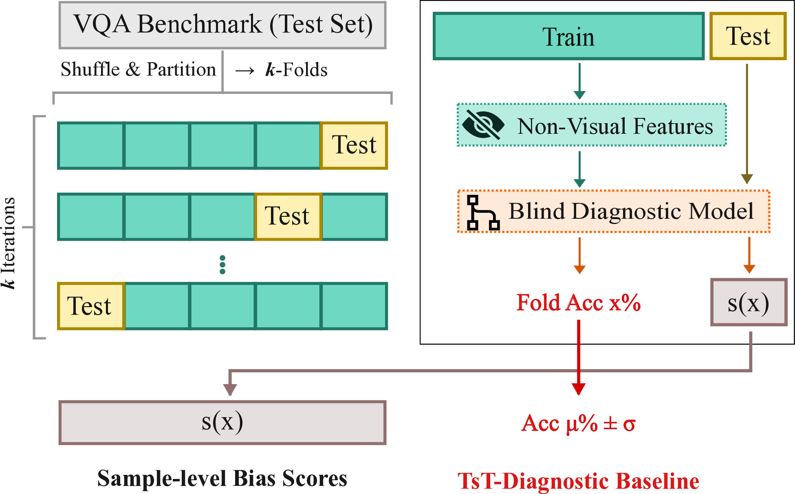
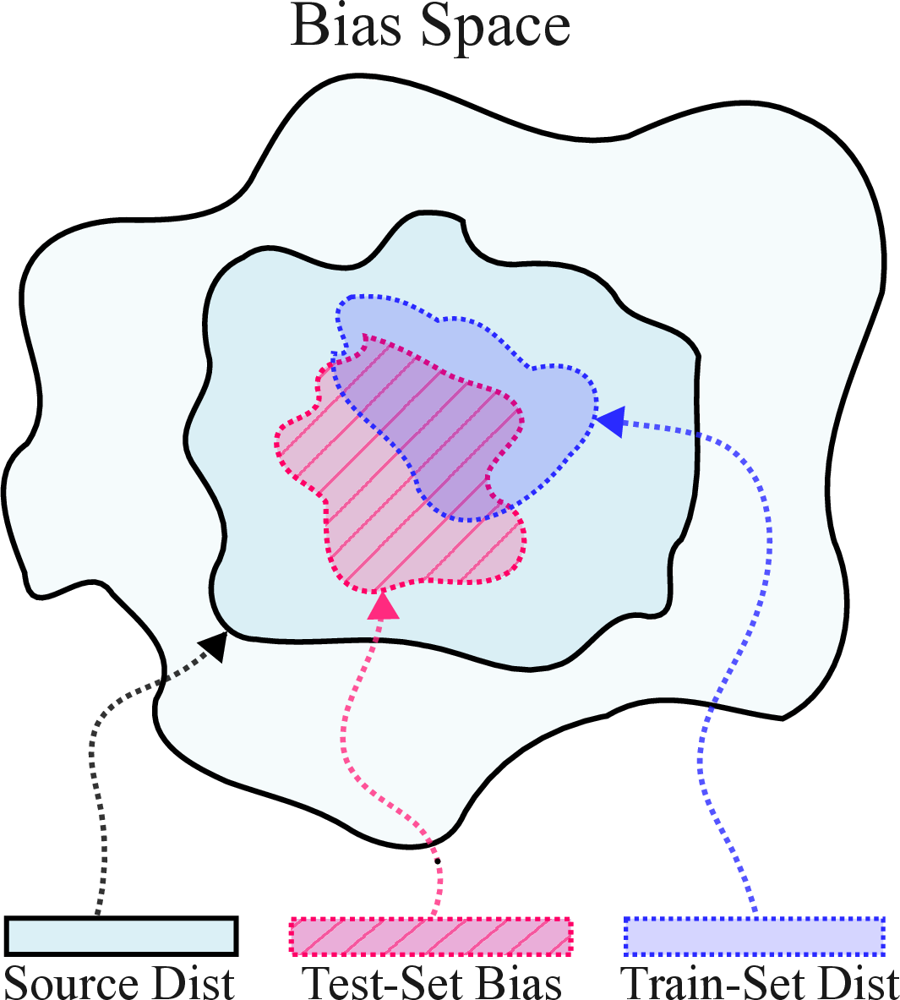
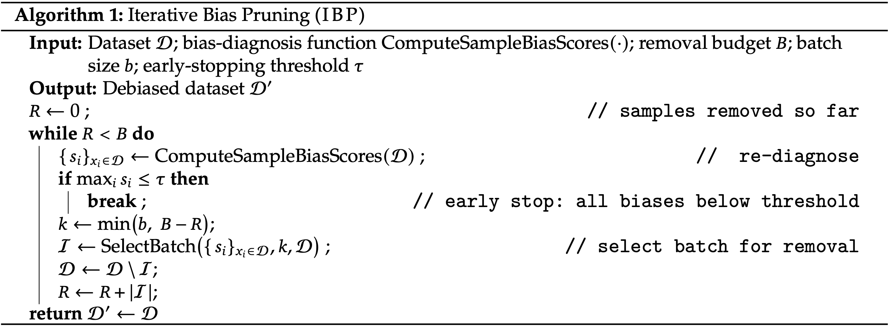

...to expose exploitable non-visual shortcuts.
Multimodal large language models can score well on many vision-centric benchmarks without strong visual understanding, by exploiting linguistic priors, answer patterns, and skewed label distributions. If a benchmark can be gamed, it will be. We argue that benchmark designers should stress-test the exact artifact they release: cross-validate a text-only model on the test set's own question and answer-option text, so that every question is scored by a model that never trained on it. This extends established partial-input auditing to multimodal evaluation.
This Test-set Stress-Test (TsT) yields a benchmark-level score and a per-question bias score \(s(x)\) for designer review. With the same model and the same scoring, a text-only Qwen2-7B goes from 24.7 zero-shot to 42.7 on VSI-Bench (+18 points) and from 47.3 to 60.3 on CV-Bench (+13), but learns little on knowledge-intensive MMMU (34.2 → 33.6), even though GPT-4o answers 52.3% of MMMU's multiple-choice questions correctly without the image. A blind score alone cannot tell pretrained knowledge apart from patterns learnable from the test set.
These shortcuts are reachable without test access: fine-tuning LLaVA-Video-7B on the in-distribution VSI-Train-10k raises its blind VSI-Bench score by 18.8 points, about as much as its vision score (+20.4). The bias scores also drive Iterative Bias Pruning (IBP). Our released VSI-Bench-Debiased is a designer-in-the-loop pilot version, not the output of the full automated IBP procedure. It lowers that fine-tuned model's blind score from 44.7 to 32.0 while its vision score falls less (57.1 → 48.7), and its vision-blind gap is 16.7, versus 12.4 ± 0.6 when a random 54% of questions is removed. TsT is a pre-release audit of an evaluation instrument, not a recipe for training deployed models on test answers.
Many multimodal benchmarks hide a dirty secret: models can achieve high scores without even using the visual input. We call this "blind" evaluation—giving the model the question without the image.
This is particularly problematic for vision-centric benchmarks, which explicitly aim to require visual inputs to be solved. If a model can score well on VSI-Bench counting questions by always answering "2", the ground truth for over half of them, are we really measuring visual understanding?
"If a benchmark CAN be gamed, it WILL be."
Therefore, multimodal benchmark designers should proactively try to "game" their own benchmarks first as a key step in the development lifecycle.
Test-set Stress-Test (TsT) is a diagnostic framework that quantifies non-visual exploitability.
We use k-fold cross-validation DIRECTLY on the test set (using only non-visual text inputs). This allows us to train diagnostic models that:
This effectively "trains on the test set" not to overfit, but to adversarially probe for intrinsic vulnerabilities.
We propose two complementary diagnostic approaches, trained on non-visual features of the test set:


You might ask: "Why train on the test set specifically? Why not use a held-out training set?"
Most multimodal benchmarks are released with only an evaluation split, so there is often no training split to use. And once a benchmark is released, models can exploit patterns specific to that test set, such as those introduced by sampling, templates, or curation.
Where a training split exists, training on it reveals biases shared across the domain (blue region), but it may miss patterns specific to the released test set (pink region). TsT probes the released test set directly. On VSI-Bench, fine-tuning a video model on the in-distribution VSI-Train-10k also raises its blind score, from 25.9 to 44.7, so the two checks complement each other.
Each card compares a text-only Qwen2-7B's blind zero-shot score with its held-out TsT score on the same benchmark, using the same model and the same scoring rule.
Zero-shot 24.7 → TsT 42.7. Multiple-choice questions only: 25.5 → 39.1. With folds grouped by scene, the gain is +17.
Zero-shot 47.3 → TsT 60.3.
Zero-shot 29.2 → TsT 33.4.
Zero-shot 24.2 → TsT 29.5. A control: TsT finds only a small gain on a benchmark built to require the image.
Zero-shot 34.2 → TsT 33.6. GPT-4o answers 52.3% of MMMU's multiple-choice questions correctly without the image, which points to pretrained knowledge rather than patterns learnable from the test set.
A TsT score is a stress test of the benchmark, not model performance. These scores are not accuracy: for multiple-choice questions they are the mean probability the model assigns to the correct option, and for VSI-Bench numerical questions they are mean relative accuracy (VSI-Bench combines the two by question count). Gains are in points.
IBP uses TsT's per-sample bias scores to remove the most exploitable samples, re-scoring the remaining samples after each batch.
Iterative Bias Pruning (IBP) alternates between:
The paper runs automated IBP on VSI-Bench (with TsT-RF) and MMMU (with TsT-LLM). The released VSI-Bench-Debiased predates this algorithm and was built with hand-written per-type filters (below). On VSI-Bench, automated per-type IBP at the pilot's 54% removal rate widens a fine-tuned model's vision-blind gap to 14.1, versus 12.2–12.4 for random removal.

VSI-Bench-Debiased is a designer-in-the-loop pilot version, not the output of the full automated IBP procedure. It removes 2,768 of the 5,130 questions (54.0%) and keeps 2,362. Because the question-type mix changes, it is a separate evaluation set, not a drop-in replacement for VSI-Bench: report it alongside the full set.
LLaVA-Video-7B fine-tuned on VSI-Train-10k and evaluated without the video, on VSI-Bench vs. VSI-Bench-Debiased. With the video, its score falls less: 57.1 → 48.7.
Removing a random 54% of questions instead leaves the same model's gap at 12.4 ± 0.6 (10 seeds); VSI-Bench-Debiased gives 16.7. How much the gap widens varies by model.
| Model Configuration | Vision | Blind | Gap (V-B) |
|---|---|---|---|
| Original VSI-Bench | |||
| LLaVA-Video 7B (Base) | 36.7 | 25.9 | 10.8 |
| + VSI-Train-10k FT | 57.1 | 44.7 | 12.4 |
| VSI-Bench-Debiased | |||
| LLaVA-Video 7B (Base) | 31.3 | 20.3 | 11.0 |
| + VSI-Train-10k FT | 48.7 | 32.0 | 16.7 |
On VSI-Bench-Debiased, the fine-tuned model's blind score falls from 44.7 to 32.0 while its vision score falls from 57.1 to 48.7, so the pilot preferentially removes questions that can be answered without the video. It reduces non-visual shortcuts but is not guaranteed to be free of them.